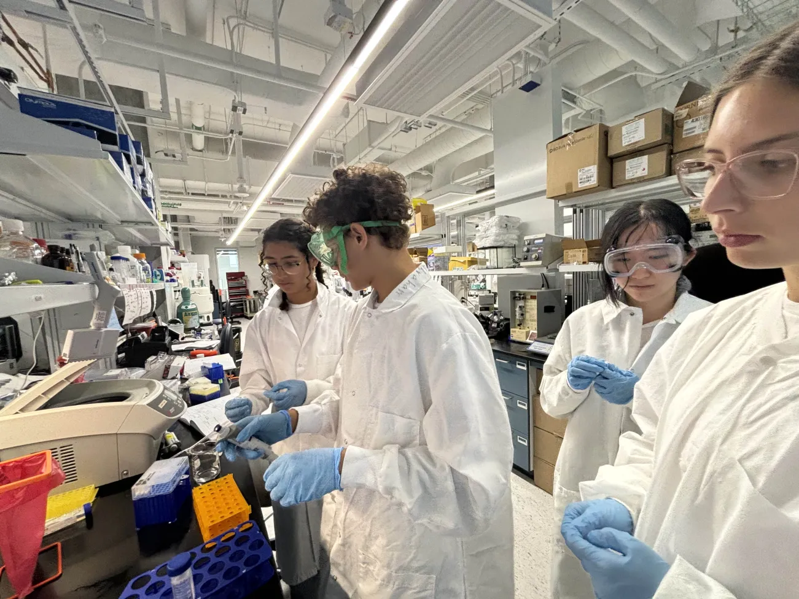

Hello! My name is Dominic Clarke and I am a biomedical engineering student at the University of Florida's College of Engineering. I love learning about drug delivery, pathology, and physiology. I also love to bike and play volleyball.

I have experience working in the Lewis Lab at UF. I am experienced with flow cytometry, pipetting, decanting, vortexing, and other basic lab skills
I have an extensive work history in customer service, working at Publix and Big Wheel Cycles. I gained experience as a salesman at Big Wheel Cycles, and gained interactive experience with strangers at both places.
Here is a list of my activites and general participation on UF campus.